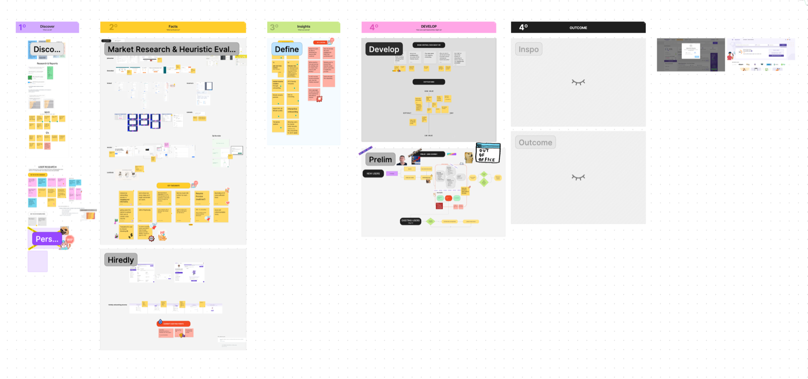
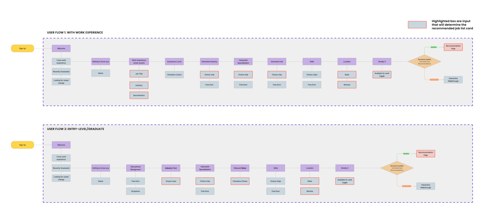
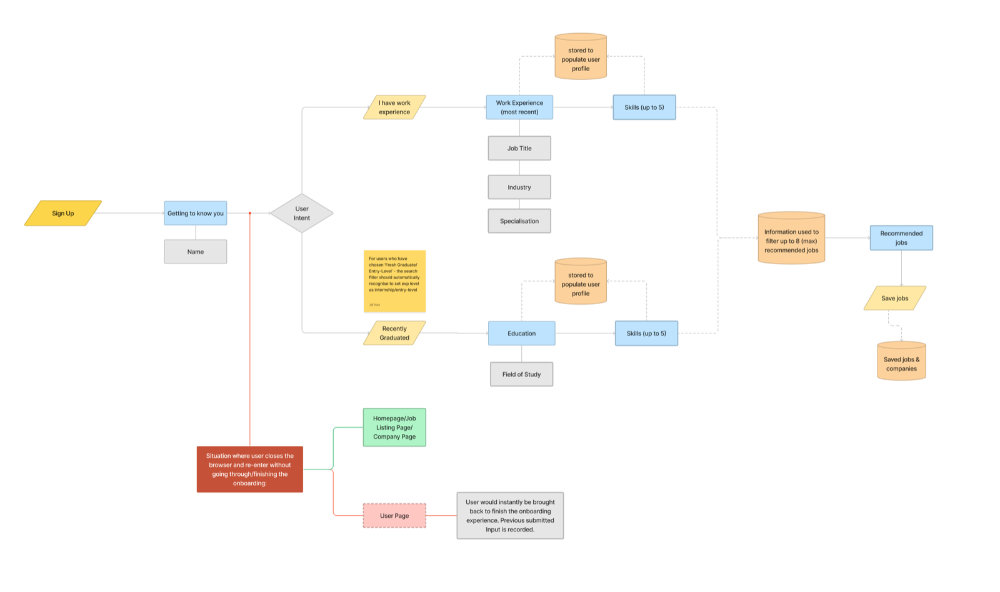
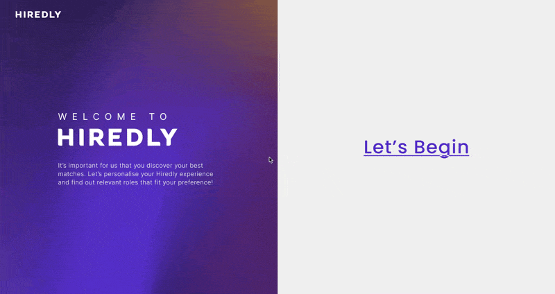
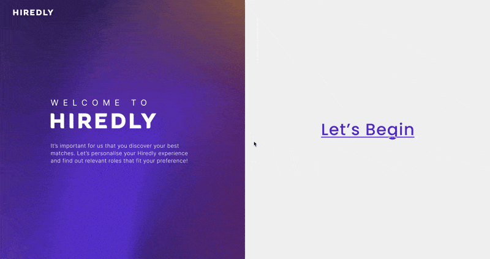

About the Company
Hiredly (previously known as WOBB) is the leading hybrid recruitment platform for junior to mid-management talent. Consisting of both a job portal and a headhunting recruitment solution, it’s a discovery platform that helps people discover any job with any employer in the market.
Project Brief
To design an interactive onboarding experience for the Hiredly jobseeking website that is engaging and informative to jobseekers on 3 breakpoints (desktop, tablet & mobile).
The Challenges
- Through user research & analysis, high bounce rates were determined at different stages of the onboarding experience.
- This caused insufficient information collected from users and therefore an inability to provide the best job recommendations to jobseekers, lowering the retention rate.

The Objectives
- To simplify the onboarding experience and ensure users are able to immediately apply for jobs after.
- To gather enough user information to curate a personalised recommended job list.
The Process
Brainstorming
We held a brainstorming session, with key discussions focusing on:
- Identifying Pain Points
- Conducting Competitive Analysis
- Determining Design Direction
- Researching Insights

Initial User Flow
We then came out with a first version of the user flow.

Final User Flow
After several rounds of discussions and requirement changes, we finalised the user flow.

Wireframe

Final Mockups
User with Work Experience

Fresh Graduate

Before & After